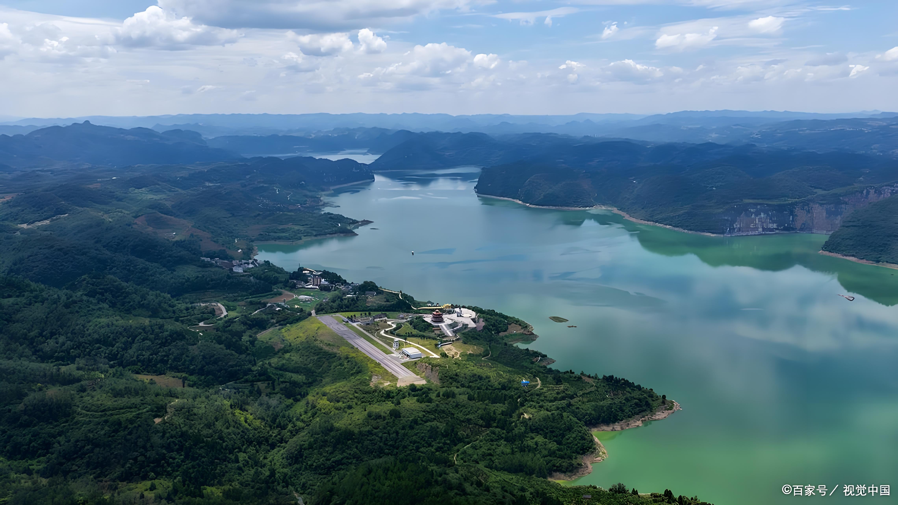
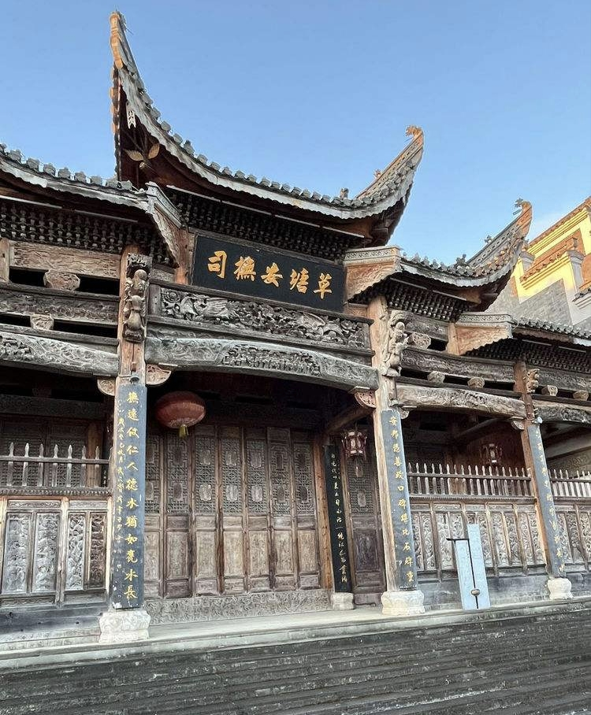
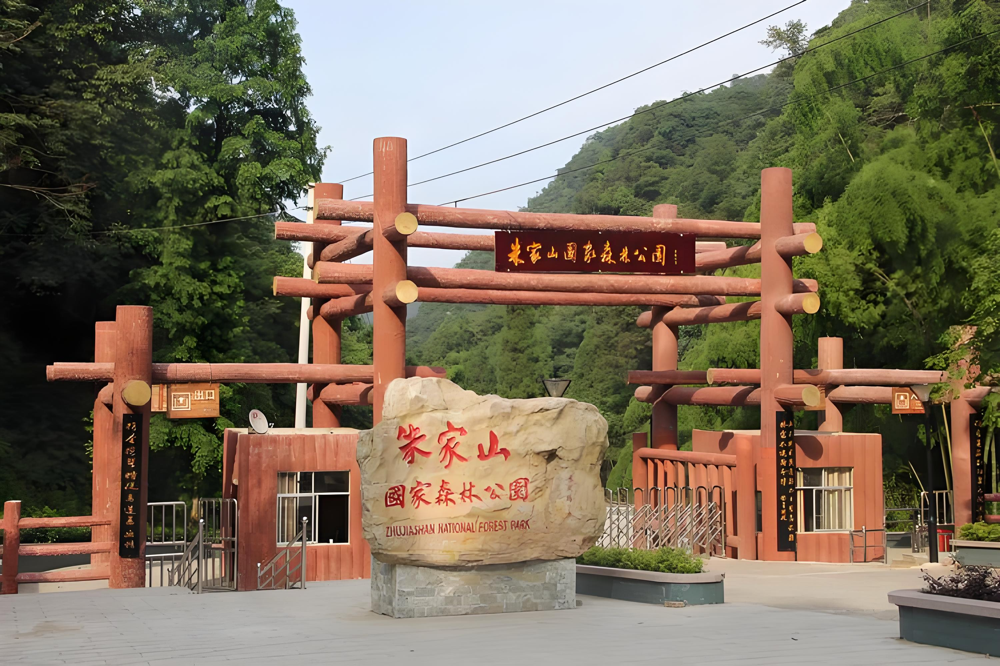
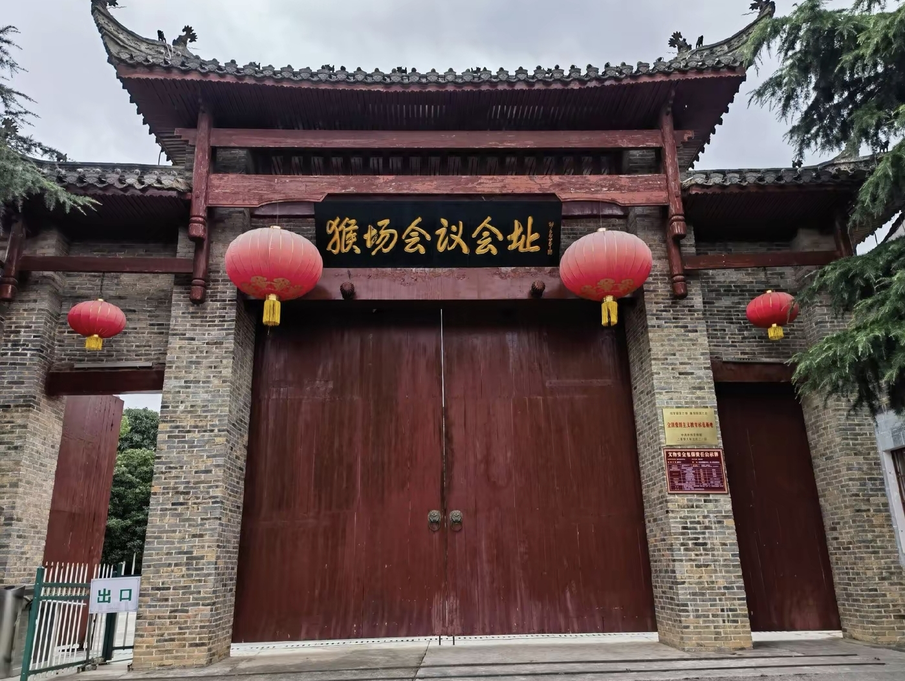

古邑新家园 · 红色瓮安景
瓮安地处黔中腹地，历史悠久、生态优良，是红色文化与自然山水交融之地。境内峡谷壮美、森林茂密、古镇清幽， 红色遗址、自然景观、民族风情相得益彰，素有“千年古邑、红色瓮安”的美誉。
近年来易地搬迁工程让山区群众喜迁新居，红色文旅与生态旅游同步发展， 绘就了一幅古邑换新颜、山水更秀丽、百姓更安居的美好新画卷。

乌江峡谷壮美险峻，大桥雄跨两岸，山水相依，是集自然观光、红色记忆于一体的国家级风景区。

黔中文化重镇，古建筑群保存完好，文风鼎盛，商贾古韵依存，是瓮安历史文化核心地标。

原始森林覆盖率高，溪流清澈、空气清新，是天然氧吧，生态环境绝佳。

红色革命圣地，被誉为“伟大转折的前夜”，红色底蕴深厚，是经典红色旅游目的地。